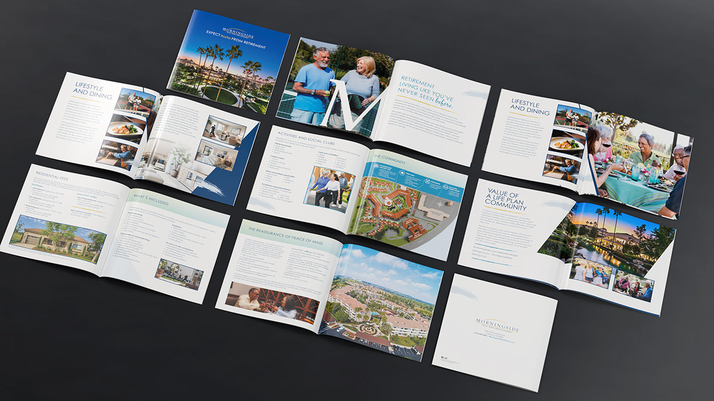
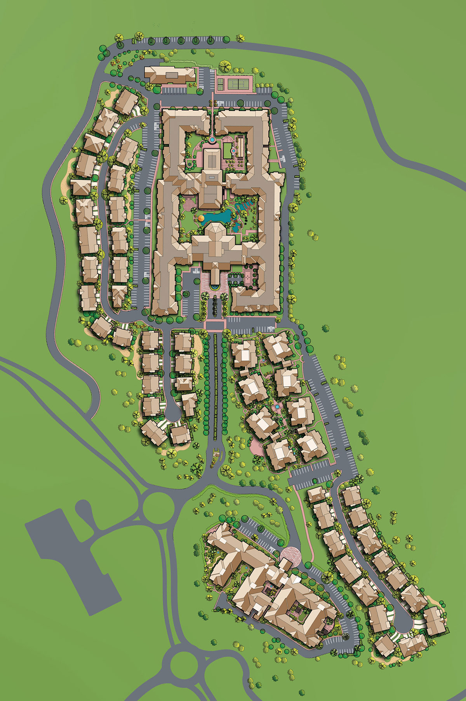
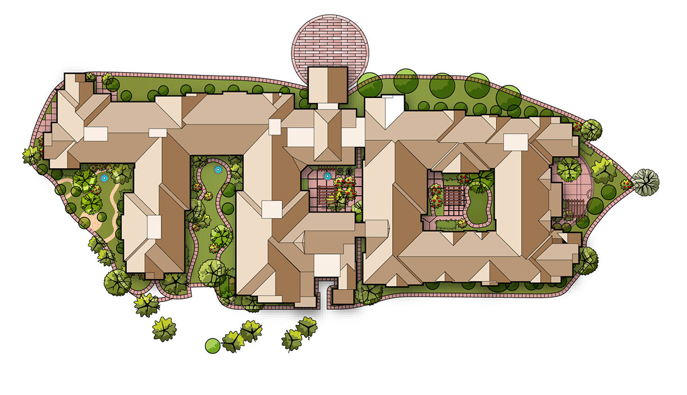
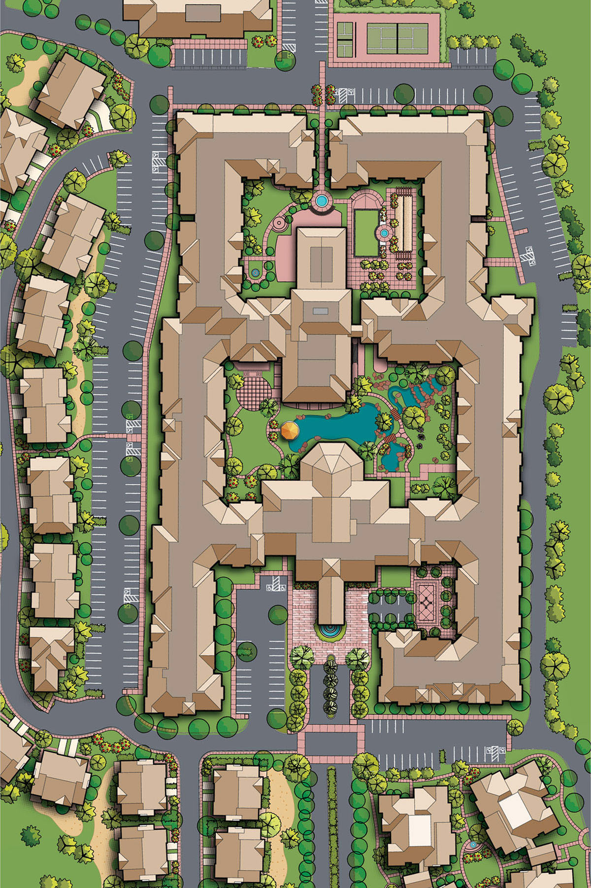
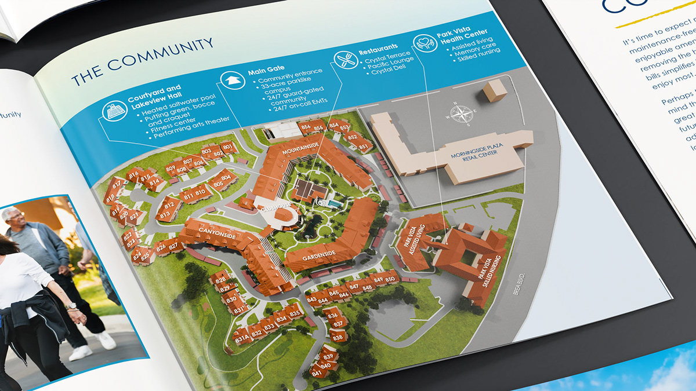
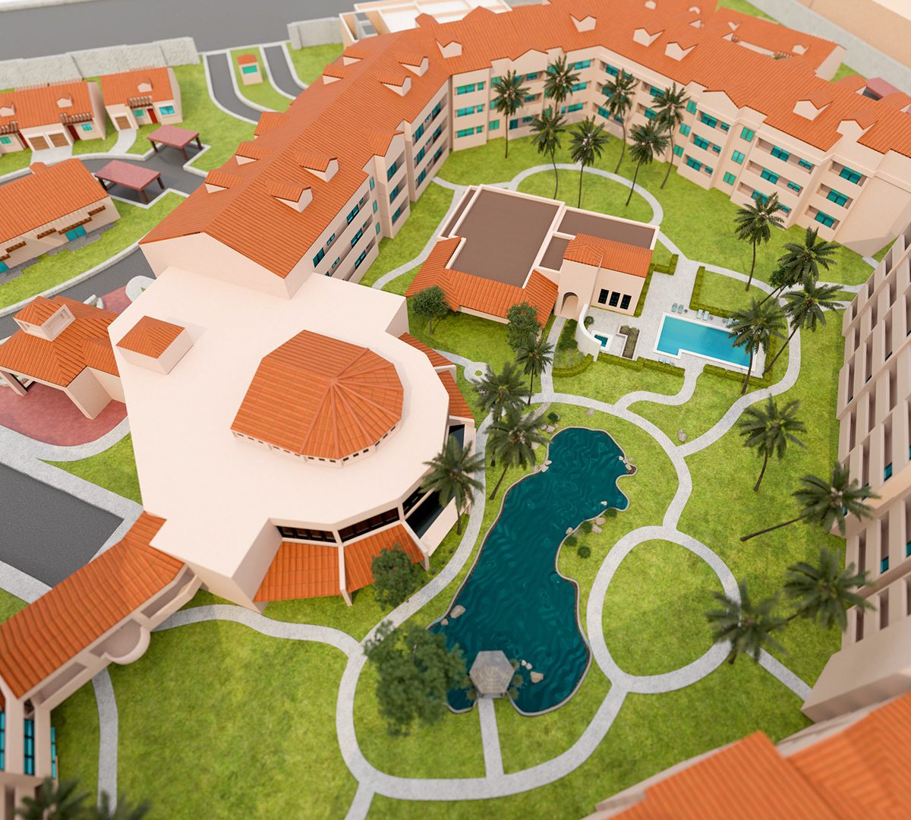
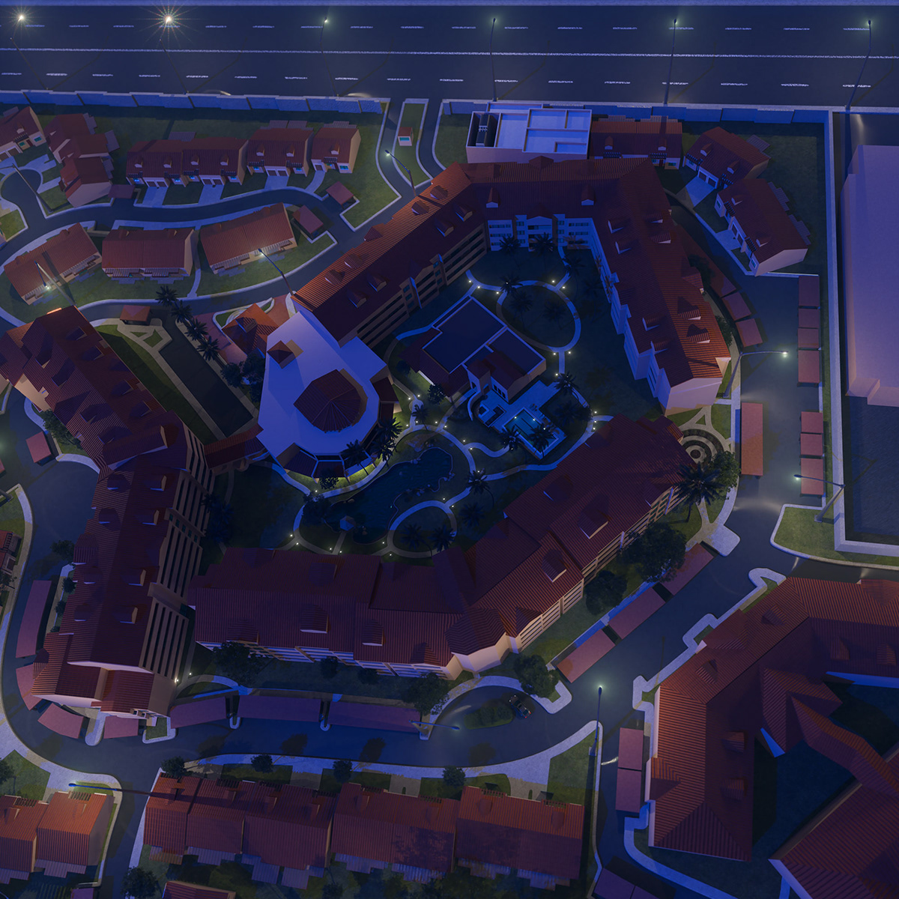

Reata Glen / Morningside 3D Maps
Turning flat site plans into immersive brand experiences.
After creating the Reata Glen map, I immediately saw the opportunity to take the work further. What began as a traditional community layout evolved into a fully immersive 3D visualization system. When Morningside requested a similar map, I used the opportunity to push both the creative and technical execution while delivering a second premium environment on the same tight production timeline.
Reata Glen · 3D map visualization and immersive community overview
From Vector Plan to 3D Environment
Accuracy first. Then depth, atmosphere, and story.
Starting in Illustrator, I engineered highly detailed, accuracy-driven vector layouts, then rebuilt them in Blender as complete 3D environments. The process included spatial planning, modeling, materials, landscape detailing, lighting, camera development, rendering, and final production-ready delivery.

Design Objective
Make the community understandable at a glance.
The goal was to create a more intuitive and visually compelling way for prospective residents to understand scale, orientation, amenities, and relationships between spaces. The final maps became more than navigational graphics—they became premium brand assets that helped audiences experience the community before ever arriving on site.
Reata Glen
From site plan to spatial experience.
Reata Glen established the visual and technical foundation for the work: a precise plan rebuilt as a dimensional environment with enough detail to support both navigation and aspirational brand storytelling.


Morningside
The second environment pushed the system further.
With the core approach proven, Morningside became an opportunity to elevate the presentation—combining 3D community mapping with a more polished editorial system, richer environmental detail, and a stronger sense of place.



Spatial Planning
Built from rigorous plan development.
Before any dimensional rendering, the community geometry had to work as an information system. Building footprints, circulation, amenities, landscaping, parking, and orientation were resolved in plan view first, creating the foundation for accurate 3D development.
Outcome
A map became a higher-value storytelling tool.
By combining accuracy-driven planning with 3D visualization and premium editorial presentation, both projects transformed static collateral into more intuitive, immersive brand assets—helping prospective residents understand the community faster while elevating the perceived value of the experience itself.